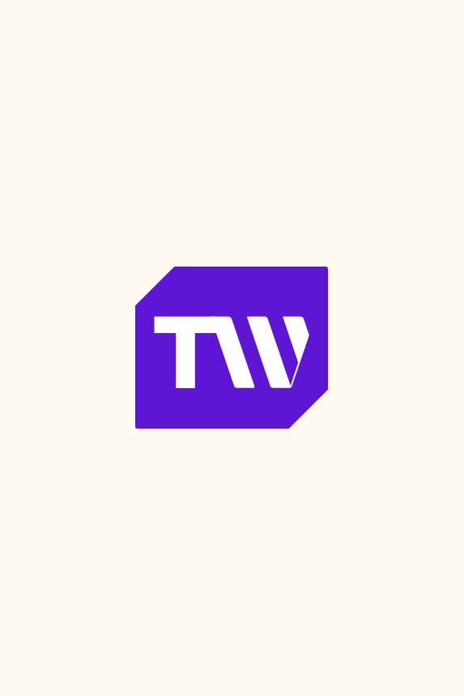
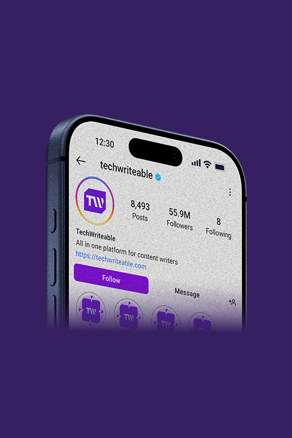
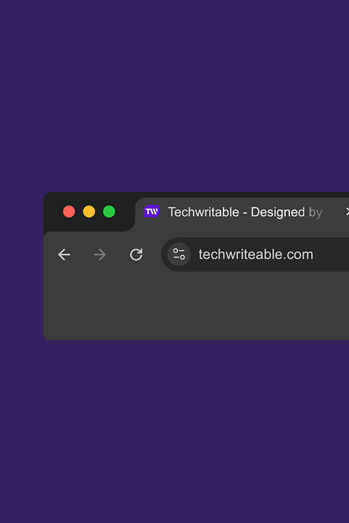
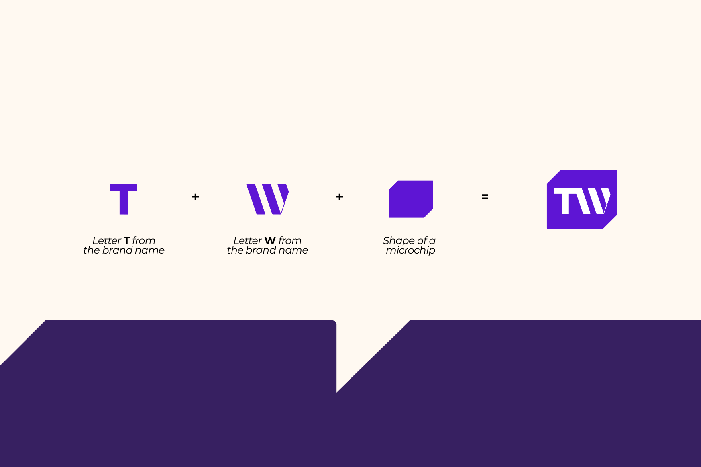

Angular Frame
The tilted container gives the TW mark movement and a recognizable digital-product silhouette.
A sharp editorial-tech identity built around confidence, clarity, and a memorable TW mark. The reveal leans into the brand's purple system, golden highlight, and content-first personality.

The mark is compact, fast to recognize, and built to work as an app icon, social avatar, and platform badge without losing its edge.
The tilted container gives the TW mark movement and a recognizable digital-product silhouette.
The letterforms are simplified for speed, contrast, and clean reproduction at small sizes.
Purple carries the tech feel, while yellow adds editorial warmth and campaign energy.
A premium reveal should show the logo living beyond the centered mark, so the sequence moves from identity board to digital and device applications.


